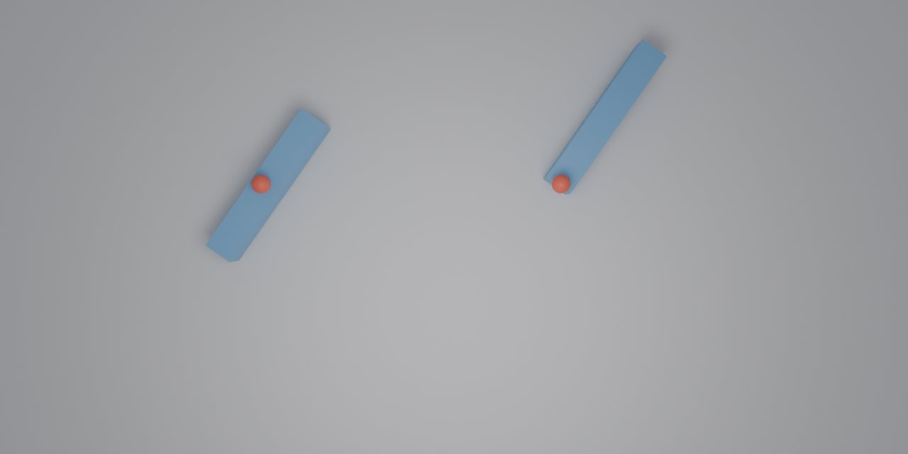

Bonus lesson
Set Object Origin
Every object has an origin point. In Object Mode, a selected object shows it as a small dot. The dot is where the object sits in 3D space, and it is the point that Rotate and Scale turn around by default.
1. Find the origin
Add a cube with Shift + A and look for the dot in the middle. The manual says the dot is yellow when the object is active and orange when it is selected but not active. The colors can differ if you changed the theme.
2. See why it matters
Select the object and press R, Z, 55, Enter. The object turns around its origin. If the origin is in the middle, it spins in place. If the origin is at one end, that end stays put and the rest swings around it.

3. Move the origin
Select the object and open Object > Set Origin. Two choices are useful early on:
Origin to Geometry moves the origin to the center of the object. Origin to 3D Cursor moves the origin to wherever the 3D cursor is, so you can put the cursor on a corner or edge first and then set the origin there. The menu also has Geometry to Origin and Origin to Center of Mass.
The manual also notes a tip: turn on Affect Only Origins in the Tool Settings Options to move an origin directly with the Move tool. Read the manual page on Object Origin.
When to use it
Set the origin before you rotate something that should hinge, such as a door or a lid. For the mug in Lessons 8 to 10, the origin matters when you place the handle: check where its dot is before you rotate it.
Exercise
Add a cube and stretch it with S, X, 4. Rotate it 55 degrees on Z and note how it turns. Undo, move the 3D cursor to one end, use Origin to 3D Cursor, and rotate again. Compare the two results.